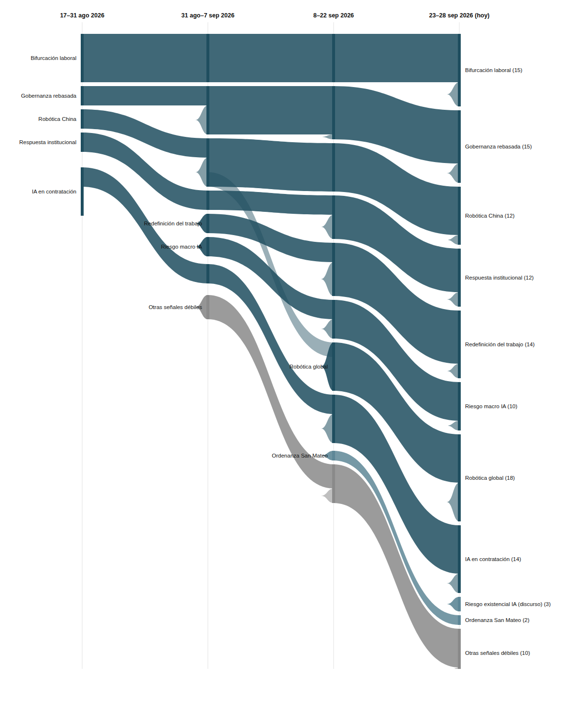

|
Vigilancia Tecnológica Competitiva
Señales del cambio
Semana 4 · 28 de septiembre de 2026
La robótica comercial deja de ser una señal emergente y se consolida en una sola edición, mientras EE.UU. cierra la puerta a la robótica china y los líderes de IA piden en la ONU la gobernanza que sus propios gobiernos rechazan.
|
Resumen ejecutivo
72 observaciones nuevas procesadas entre el 23 y el 26 de septiembre (la base histórica no registró observaciones adicionales en el periodo). Por volumen, esta edición prioriza ~28 observaciones de mayor relevancia estratégica; el resto refuerza patrones ya documentados sin aportar variación cualitativa nueva. El registro de señales pasa de 17 a 20: 8 fuertes (sin cambios de fuerza, pero Comercialización global de robótica física pasa de emergente a consolidada), 5 débiles con potencial de escalar y 7 débiles — 3 de ellas nuevas esta semana. 0 latentes, 0 muertas.
Los tres movimientos más relevantes de la semana:
- La comercialización de robótica física se consolida en una sola edición: Amazon anuncia un cuarto centro de fabricación de robots, la IFR confirma 5 millones de robots operando en fábricas de todo el mundo, y Tesla enfrenta a la vez problemas de manufactura en Optimus y resistencia de sus propios trabajadores a entrenarlo.
- La FCC añade robots avanzados de origen chino a su lista de dispositivos restringidos, cerrando de facto el mercado estadounidense a la robótica china la misma semana que China empieza a llevar sus humanoides de la demostración a la producción real.
- Los CEO de OpenAI y Anthropic piden ante el Consejo de Seguridad de la ONU una gobernanza global de la IA, justo cuando la administración estadounidense rechaza públicamente cualquier supervisión "globalista" — la industria pide la regulación que su propio gobierno descarta.
|
|
Principales insights
3. La industria de IA pide en la ONU la gobernanza global que su propio gobierno rechaza.
Sam Altman (OpenAI) y Dario Amodei (Anthropic) pidieron conjuntamente al Consejo de Seguridad de la ONU regulación y cooperación global sobre IA, declarando que "estamos en una encrucijada", poco después de que la administración estadounidense rechazara la supervisión "globalista" de la IA. La señal Gobernanza rebasada por la adopción sigue Fuerte, ahora con esta fricción explícita entre industria y gobierno como parte de su evidencia.
Implicación: cuando quienes construyen la tecnología piden más regulación que la que sus propios reguladores están dispuestos a imponer, el vacío de gobernanza deja de ser un problema técnico y pasa a ser una decisión política deliberada.
|
|
Señales de la semana
|
|
Gráfico de evolución
Flujo de las 8 señales macro y las dos señales débiles más notorias, a lo largo de cuatro periodos. A partir de esta edición, el grosor de cada banda es proporcional al número de evidencias que la respaldan (no solo a su categoría Fuerte/Débil↑/Débil), para que una señal con mucho volumen de noticias se vea claramente más gruesa que otra con menos. El color distingue señales macro (azul petróleo), las dos señales débiles destacadas (azul claro) y el resto de señales débiles agregadas (gris).

|
|
Descripción textual del gráfico (por si no se renderiza la imagen): De izquierda a derecha, cuatro columnas temporales: 17–31 ago 2026, 31 ago–7 sep 2026, 8–22 sep 2026, y 23–28 sep 2026 (hoy). Las ocho señales macro llegan a la cuarta columna con anchos claramente distintos según su volumen de evidencia acumulada: Robótica global es la más gruesa (18 evidencias), seguida de Bifurcación laboral y Gobernanza rebasada (15 cada una), IA en contratación (14), Redefinición del trabajo (14), Robótica China y Respuesta institucional (12 cada una), y Riesgo macro IA (10, la más fina de las ocho). De las señales débiles, se muestran como bandas propias las dos con más evidencia: escalada del discurso de riesgo existencial de la IA (3 evidencias, nace esta edición) y la ordenanza de San Mateo (2 evidencias, sin cambio desde la edición anterior); el resto de señales débiles (10) se agregan en una banda gris. Ninguna banda desaparece del todo: no hay señales latentes ni muertas todavía en el registro.
|
|
Señales a tener en cuenta
- Disidencia interna en laboratorios de IA por seguridad. Nueva esta semana. La escalaría: renuncias similares en otros grandes laboratorios; cartas abiertas de empleados en activo. Indicador: número de salidas públicas por motivos de seguridad en labs de primer nivel.
- Escalada del discurso mainstream de riesgo existencial de la IA. Nueva esta semana, ya Débil↑ por tres fuentes independientes de alto perfil en la misma semana (Gates, Forbes, WSJ). La escalaría: figuras no técnicas (política, financiera) sumándose a las advertencias.
- Cuántica como frontera adyacente de política industrial laboral. Nueva esta semana. La escalaría: otros estados o países lanzando iniciativas equivalentes con datos de empleo verificables, no solo anuncios.
- Robots-soldado con financiación privada/Pentágono, OpenAI Jobs Platform, "impuesto del discernimiento" y ordenanza de San Mateo. Las cuatro Débil↑ de la edición anterior siguen sin evidencia nueva propia esta semana (aunque el eje temático de cada una sigue vivo en otras señales). Ninguna se acerca todavía al umbral de latencia (4 ediciones).
- OpenExecutive, AI Tax Act, centro NSF de coadaptación y predicción de Musk sobre el gasto anual en IA. Acumulan ya dos ediciones sin evidencia nueva desde su primera aparición el 7 de septiembre. Si no reaparecen en la próxima edición, seguirán a distancia del umbral de señal latente (4 ediciones sin evidencia), pero conviene vigilarlas de cerca.
|
|
Movimientos del histórico
Cambiaron de estado: Comercialización global de robótica física pasa de emergente a consolidada — es la señal con más volumen y diversidad de evidencia de toda la edición.
Nacieron: tres señales débiles nuevas — disidencia interna en laboratorios de IA por seguridad, cuántica como frontera adyacente de política industrial laboral, y escalada del discurso mainstream de riesgo existencial de la IA (esta última nace ya como Débil↑ por la convergencia de tres fuentes independientes en la misma semana).
Latentes o muertas esta semana: ninguna. OpenExecutive, AI Tax Act, el centro NSF de coadaptación y la predicción de Musk (última evidencia: 2026-09-07) acumulan ya dos ediciones sin evidencia nueva; a dos ediciones más del umbral de señal latente si la tendencia continúa.
|
|
Cierre
Pregunta abierta: esta semana la robótica física pasó de "emergente" a "consolidada" en un solo salto, y EE.UU. y China se cerraron mutuamente el mercado de robots casi al mismo tiempo. Si tu sector depende de proveedores de hardware, componentes o automatización física: ¿sabes ya de qué bloque geopolítico depende tu cadena de suministro, y qué harías si mañana quedara del lado equivocado de una restricción como la de la FCC?
Metodología: cada señal es trazable a observaciones concretas en la base de vigilancia. Una señal pasa a "latente" tras 4 ediciones sin evidencia nueva, y a "muerta" tras 8; ninguna del registro actual ha cruzado esos umbrales todavía.
|
|